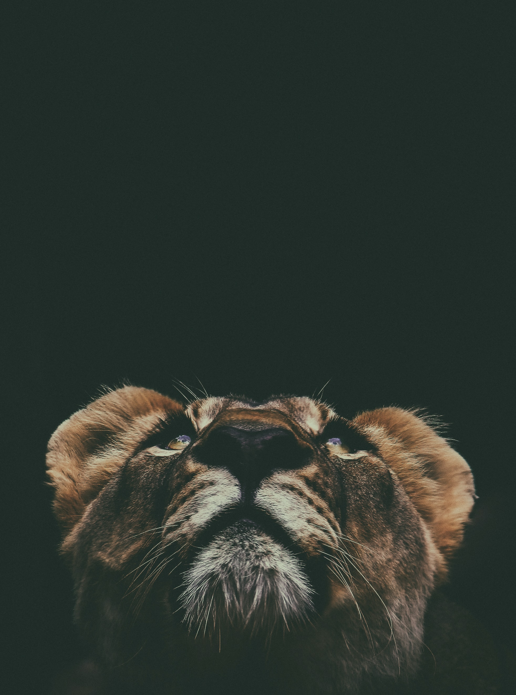
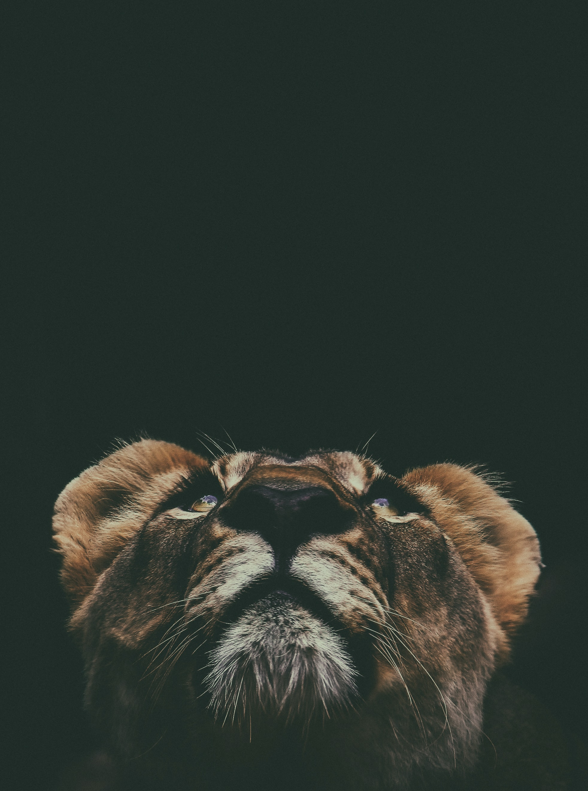

Introduction
The lion (Panthera leo) is a large cat of the genus Panthera native to Africa and India. It has a muscular, broad-chested body, short, rounded head, round ears, and a hairy tuft at the end of its tail. It is sexually dimorphic; adult male lions are larger than females and have a prominent mane. It is a social species, forming groups called prides. A lion's pride consists of a few adult males, related females, and cubs. Groups of female lions usually hunt together, preying mostly on large ungulates. The lion is an apex and keystone predator; although some lions scavenge when opportunities occur and have been known to hunt humans, the species typically does not actively seek out and prey on humans. The lion inhabits grasslands, savannas and shrublands. It is usually more diurnal than other wild cats, but when persecuted, it adapts to being active at night and at twilight. During the Neolithic period, the lion ranged throughout Africa, Southeast Europe, the Caucasus, Western Asia and northern parts of India, but it has been reduced to fragmented populations in sub-Saharan Africa and one population in western India. It has been listed as Vulnerable on the IUCN Red List since 1996 because populations in African countries have declined by about 43% since the early 1990s. Lion populations are untenable outside designated protected areas. Although the cause of the decline is not fully understood, habitat loss and conflicts with humans are the greatest causes for concern.
One of the most widely recognised animal symbols in human culture, the lion has been extensively depicted in sculptures and paintings, on national flags, and in contemporary films and literature. Lions have been kept in menageries since the time of the Roman Empire and have been a key species sought for exhibition in zoological gardens across the world since the late 18th century. Cultural depictions of lions were prominent in Ancient Egypt, and depictions have occurred in virtually all ancient and medieval cultures in the lion's historic and current range.
Gallery
 

Etymology
The English word lion is derived via Anglo-Norman liun from Latin leōnem , which in turn was a borrowing from Ancient Greek . The Hebrew word lavi may also be related. The generic name Panthera is traceable to the classical Latin word and the ancient Greek word panther'.
Felis leo was the scientific name used by Carl Linnaeus in 1758, who described the lion in his work Systema Naturae.The genus name Panthera was coined by Lorenz Oken in 1816. Between the mid-18th and mid-20th centuries, 26 lion specimens were described and proposed as subspecies, of which 11 were recognised as valid in 2005. They were distinguished mostly by the size and colour of their manes and skins.